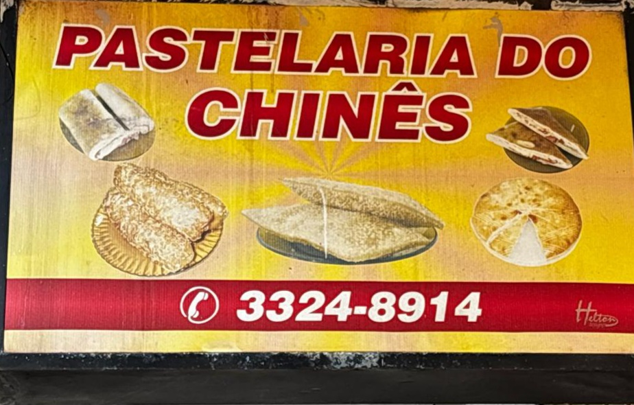
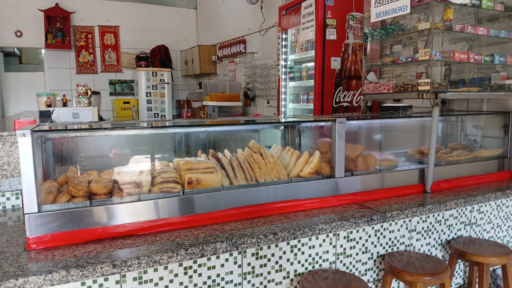
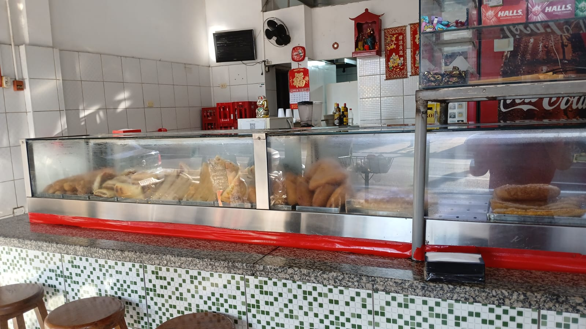
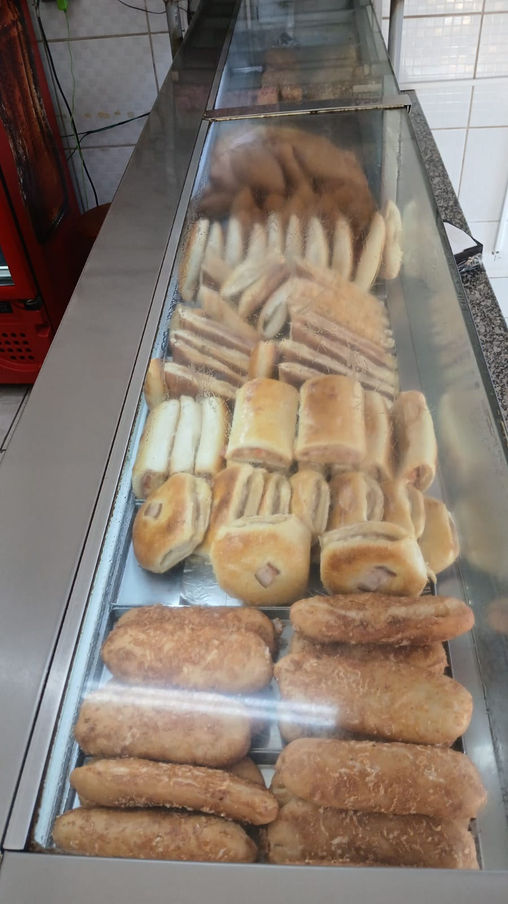
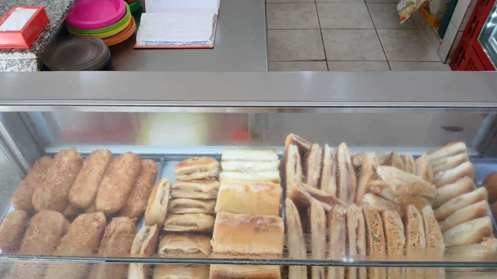

Alimentação • Ourinhos - SP
A Pastelaria do Chinês é referência em sabor e tradição em Ourinhos, oferecendo pastéis preparados na hora com qualidade e muito recheio.
Conhecida pelo atendimento rápido e ambiente acolhedor, é o lugar ideal para quem busca uma refeição prática, saborosa e com excelente custo-benefício.
Com variedade de sabores e ingredientes selecionados, a pastelaria conquista clientes todos os dias com seu padrão de qualidade e sabor único.
Endereço: Rua Altino Arantes, nº 44
Bairro: Centro
Cidade: Ourinhos - SP
WhatsApp✔ Pastéis feitos na hora ✔ Recheios variados e caprichados ✔ Atendimento rápido ✔ Ambiente acolhedor ✔ Excelente custo-benefício ✔ Tradição em Ourinhos



